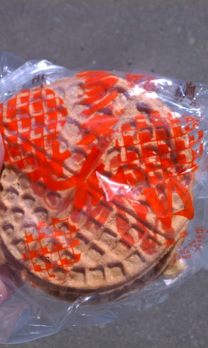
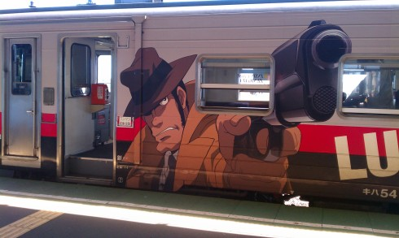

北海道旅行記(2012/08/25 - 2012/08/28) その2
その1 の続き．
8/27
根室に行くため朝5時に起床．昼も根室行きの列車はあるけど，この時間だと納沙布岬を回るバスツアーに参加できる． 釧路は相変わらずの霧．

駅についても売店が開いてないので食べ物が買えない．仕方ないので緑茶だけ買う．
北海道キオスク限定の緑茶．濃すぎず香ばしくておいしい． とはいえ最低限なんかエネルギー補給しとかないとまずいので，昨日買った牛乳飴をなめる．
釧路の花咲線ホームを歩いてたら，端に湿原の鐘なる物体があった．
そんなことをしていると 快速はなさき が到着したので乗って出発． 途中何度も減速したり警笛を鳴らしたりしていたが，どうも線路内に鹿が入ってくるらしい．さすが北海道……． 最初30分くらいは起きてたけどいつの間にか寝てて，気づいたら根室だった．
{kind=link}
日本最東端の有人駅，根室．
駅前の観光案内所兼 バスターミナル で チケット を買ってバスに乗る．
{kind=link}
{kind=link}
ガイドを聞きながら納沙布岬へ．根室は1ヶ月の半分ほどは霧に覆われているとか，気温が25℃を超えるのは珍しいとかいう話を聞いた．
納沙布岬の碑を一応撮ったけど，逆光で全然見えない……． 晴れていると国後島が見えるらしいけど海上は霧が出ていて，水晶島しか見えなかった．
向こう側には原っぱがあって，四島のかけ橋というでかいオブジェが置いてあった． 奥に見えるのは四島返還の願いを込めたかがり火で，沖縄からもらってきたものらしい．
他には 北方領土資料館 というのもあった．
{kind=link}
帰り際に 北方領土視察証明書 をもらった． とは言ってもほとんど見えなかったけど……．
{kind=link}
根室駅に戻る時は途中で金刀比羅神社に立ち寄った． 高田屋嘉兵衛 の建てたものらしい． 香川の神社と関係があるのかは分からない．
{kind=link}
神社は普通に人がいて管理もされてる風だったのに， 手洗い場は水が止まってた ……．
{kind=link}
展望台からは根室港が見えた．
駅に戻ってから喫茶どりあんへエスカロップを食べに行く． エスカロップ発祥と言われる喫茶店で，有名なところらしい．

エスカロップ．カツ単体でも衣がサクサクしてて十分おいしいけど，タケノコの入ったバターライスとデミグラスソースが更に味を引き立てる．
その後は適当にうろつく． 海岸に行くと釣りをしてる人がいて，釣った魚をウミネコに投げてやっていた．
海岸からは弁天島が見える．
あと端谷菓子店でオランダせんべいを買った．

せんべいとは言うものの小麦粉の焼菓子で，堅焼きのワッフルみたいな感じ．結構大きいし，固さも相まって3枚240円の割には多く感じる．
あまり調べず適当に歩き回ってたけど，坂だらけで体力を使う上にあまり面白い店に出くわすこともないので，ちゃんと調べてから歩いた方が良かったなーと思った．
根室駅に戻ってカニを売ってる店を覗いたら，おっちゃんにカニを食べて行くように勧められた． 一番安いやつで，花咲蟹1杯500円．
これをハサミでばらして食べる．脚を食べたら胴体も剥いて，蟹味噌まで全部食べた． 1杯で結構腹にたまるのでかなりお得感．おいしいし．
その後は帰りの列車が来るまで土産物屋を物色して時間を潰す．根室の地酒「北の勝」の2合ビンを買った．あとガラナ．

帰りの列車はルパン列車だった(別の方向から見た写真 1 ， 2 ， 3 )． まあ乗ってしまえば普通の列車と変わらないけど……．
{kind=link}
{kind=link}
{kind=link}
帰り際に東根室駅で写真を撮る．最東端の駅．
歩き疲れたので帰りもだいたい寝てた．
16時くらいに釧路に着き，適当に宿を取って繁華街付近を散策． 霧は出てない ． 釧路川の向こうに 花時計 (って言うのかな)を見つけた．
{kind=link}
{kind=link}
せっかくなので丘の上にも登ってみる．
見晴らしが良い． あと謎のオブジェがあった．
「地殻交信機」というタイトル．前衛芸術……．
宿にチェックインしてからは，疲れてたので電子機器を充電しつつ2時間くらいだらだらしてた．
20時前になって，せっかく釧路だし居酒屋で魚食べるかーということで，宿に置いてあった釧路居酒屋マップを見て「居酒屋 かかし」へ． とりあえず地酒の福司とさんまの刺身を頼む．
さんまはすごく脂が乗ってておいしい．
ほっけ．でかい．ホクホクで良かった．
だし巻き卵．一人で食べるにはちょっと多いけど甘くておいしい．
食事中，テレビで鳥人間コンテストをやっていて，東工大も出てきたけどすぐ落ちてしまった．
満腹になったので店を出て，酔い覚ましにとうきび茶を購入．
焼きとうもろこしのような甘い香りと後味の面白いお茶．おいしい． これを飲みながらニコニコでアニメ観て就寝．
その3へ続く ．